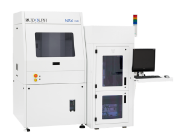

Industry Spotlight - 2015
September 2015
Siliconware Precision Industries Co., Ltd. and Hon Hai Precision Industry Co., Ltd. entered into a Letter of Intent whereby the parties will form a strategic alliance through the exchange of shares.
Taichung, Taiwan - August 28, 2015 - Hon Hai Precision Industry Co., Ltd. (TaiwanStock Exchange:2317.TT) (“Hon Hai”) and Siliconware Precision Industries Co., Ltd. (“SPIL” or the “Company”) (Taiwan Stock Exchange: 2325.TT, NASDAQ:SPIL) signed a Letter of Intent today, whereby the parties will form a strategic alliance through the exchange of shares in accordance with Article 156.8 of the Company Act. The alliance will provide customers with the best integrated service program through future collaboration on technology and business.
Hon Hai has always committed itself to providing a high technology one -stop service provider to system brand customers through vertical integration. Hon Hai stands as a world leader in precision tooling, components, equipment process design, manufacturing, assembly, sales and other vertical integration technologies. The development of microchip related integration services is also one of Hon Hai conglomerate’s direction for development. SPIL is the world’s third largest IC assembly and testing house, with wire bonding, flip-chip, wafer level packaging, bumping, multichip package and high-level assembly and testing technology. ShunSin, the subsidiary of Hon Hai, also owns the world-leading System-in-Package (SiP) technology.
The trend of consumer electronics development has seen an increase in demand for smaller form factor, energy saving, and high performance for products such as smart phones, wearables which all require minimizing size, weight, and better thermal dissipation. In order to achieve the above, SiP and high level IC assembly technology must be adopted and through chip to system vertical integration, actual synergy will be achieved.
Upon the formation of the strategic alliance, the parties will work together on the following items:
1. Substrate design integration to manufacture competitive products, such a Embedded Substrate, Panel Size Fan-Out WLCSP, and etc.
2. Future demands in smart phones, internet of things, wearables, etc., SPIL will provide IC wire bonding and wafer level packaging technology combined with Hon Hai’s SMT and module assembly technology in order to develop the next generation of system level assembly products.
3. Jointly develop ASIC chip, assembly, modules, etc., from the design approach, in order to accelerate the time-to-market, increase product performance and lower costs.
4. Closely collaborate on SiP related technology to fully explore its inherent commercial opportunities.
In order to maximize the synergy of the strategic alliance, the parties will also work Together on the following:
1. Hon Hai’s precision mold, machinery manufacturing, and automation technology will enhance SPIL’s industry competitiveness.
2. Hon Hai’s unique thermal dissipation technology can improve SPIL’s thermal dissipation process in IC packaging.
3. As future mobile devices will be equipped with more functional modules such as fingerprint recognition, MEMS application, and high resolution camera, the miniaturization of SiP will become the major trend of the next generation IC packaging. Hon Hai and SPIL will closely cooperate and seek for a win-win partnership.
Siliconware Precision Industries Co., Ltd.
www.spil.com.tw
Rudolph Technologies NSX 330 Series Widely Adopted for Advanced Packaging Inspection and Metrology
Newest macro defect inspection tool with configurable 2D and 3D measurements provides superior capability and cost of ownership
Flanders, NJ -September 1, 2015 - Rudolph Technologies, Inc. (NYSE: RTEC) today announced the widespread adoption and success of its newest macro defect inspection tool, the NSX® 330 Series. The NSX 330 Series provides high-speed macro defect inspection and 2D and 3D metrology for advanced packaging applications, which are being developed to support the mobility and the growing Internet of Things (IoT) markets. It has been quickly and enthusiastically adopted, garnering repeat orders from top foundries, integrated device manufacturers (IDMs) and outsourced assembly and test (OSAT) manufacturers. The NSX 330 Series will be on display at SEMICON® Taiwan, September 2-4, 2015.
“A large number of advanced packaging processes are being developed by OSATs, foundries and IDMs, each of which has slightly different inspection and metrology requirements,” said Rudolph’s Mike Goodrich, vice president and general manager of the Inspection Business Unit. “Customers have embraced the NSX 330 Series’ capability to solve the unique metrology process control challenges in advanced packaging applications, while also providing a 30 percent 2D inspection throughput improvement over the previous generation NSX 320 System. The NSX 330 Series offers an array of optional metrology capabilities for both 2D and 3D metrology applications, including 100 percent bump height and coplanarity. Customers have come to rely on the system’s superior 3D capability, specifically the ability to simultaneously measure topography and thickness with nanometer-level repeatability.
“The versatility of the NSX 330 Series has been an important feature that has enticed manufacturers to implement the system in their final assembly and test processes,” added Goodrich. “For example, for applications such as flip chip, copper pillar bump, fan-out wafer level packaging (FOWLP) and through silicon vias (TSVs), manufacturers can achieve lower costs by consolidating inspection and a variety of metrologies onto a single tool platform, reducing the number of tools required and simplifying their process of record.”
The NSX Series is a key component of Rudolph’s broad product family that includes lithography, metrology, inspection and software to address high-value problems with process and yield enhancing solutions. “Our customers and their customers are demanding increased data richness,” stated Mike Plisinski, Rudolph’s executive vice president and chief operating officer. “The NSX 330 Series produces a complete wafer characterization within the packaging process. Coupled with advanced analytics from Discover® Enterprise yield management software and Equipment Sentinel™ fault detection and classification software, the NSX Series provides manufacturers with the ability to accelerate ramp and improve yields. We are very pleased with the customer response to our increased value proposition and we will continue to provide and support leading-edge process and control solutions.”